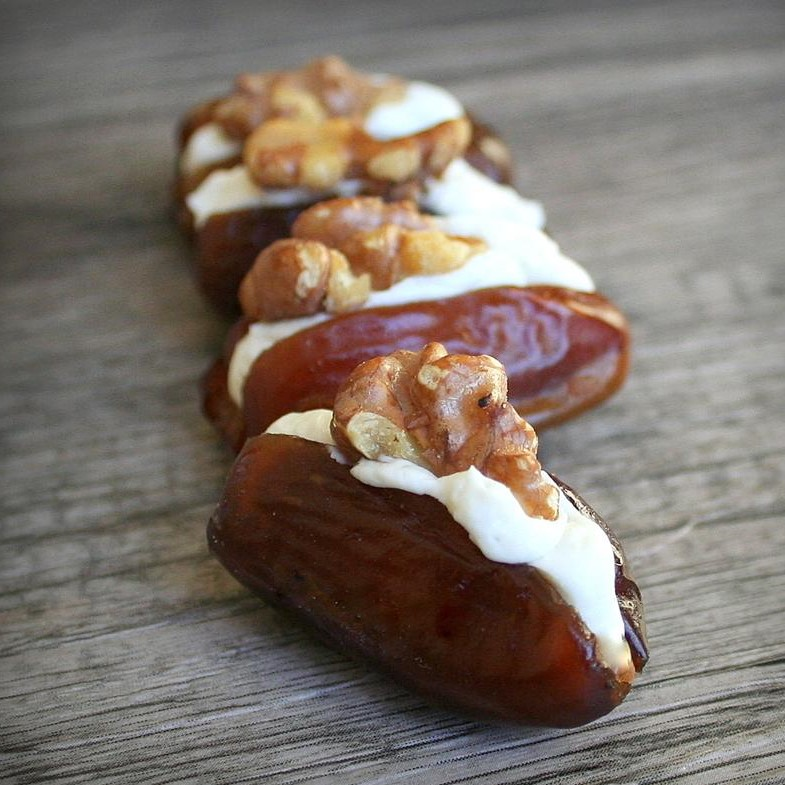

Stuffed Dates

Description
Dates are a traditional way to break fast. This delicious recipe can be made quickly and easily, which makes it a great treat to break your fast with. You can choose to follow the recipe or try different cheeses for the filling, such as goat's cheese.
Ingridients
- 1 (3 ounce) package cream cheese, softened
- 3 ounces crumbled Gorgonzola cheese
- 36 pitted dates
- 36 walnut pieces
Steps
- Mix cream cheese and Gorgonzola cheese together in a bowl.
- Cut a slit into each date so they can be spread flat. Spread cheese mixture into each date; top with a walnut piece.
- You can put the cheese mixture into a zip-type bag, cut a hole in one corner, and squeeze mixture into the date. I feel you lose too much cheese in the bag doing it this way.